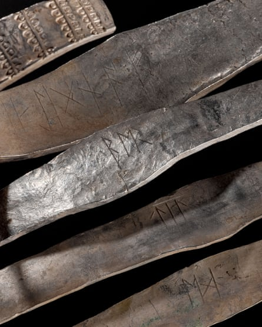
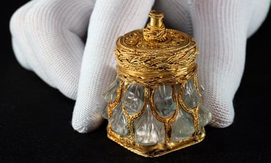
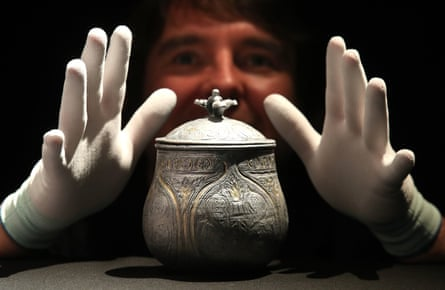

When the Galloway hoard was discovered in a ploughed field in western Scotland in 2014, it proved to be the richest collection of Viking-age objects ever found in Britain or Ireland. Now the long-standing mystery of who might have owned it when it was buried more than 1,000 years ago may have been solved.
The spectacular silver and gold treasure had in fact belonged to everybody – “the community” – just as it does today, having been acquired in 2017 by National Museums Scotland (NMS).
The evidence has been found in a runic inscription on one of the hoard’s four elaborately decorated silver “ribbon” arm rings, which has only just been deciphered. It reads: “This is the community’s wealth [property].”
Dr Martin Goldberg, NMS’s principal curator of early medieval and Viking collections, said the discovery had been made just as the treasure had been lent to Adelaide in Australia, its first international tour: “We’re spreading the wealth. Everybody owns a bit of this hoard – just like the inscription says.”
He added: “The idea that the wealth this hoard represents would be communally held is fascinating.”
Experts had struggled to make sense of the inscription inside the curved half of the arm ring – “DIS IS ЇIGNA ˑFˑ” – because the word, “ЇIGNAF”, does not relate to any language spoken in early medieval Britain or Ireland.
The discovery was made just as the Galloway hoard was set to embark on its first international tour.Photograph: National Museums Scotland
The mystery was unravelled with the realisation that the final rune, “F” – marked out with puncts, or dots, to either side – could be understood as “feoh”, meaning wealth or property. “ЇIGNA” could then be interpreted as the Old English word “higna”, or community. The first word, “DIS”, is thought to be a misspelling of “this”, perhaps pronounced “D-i-s”, much as it would be in some parts of modern Ireland.
The word “higna” is often used elsewhere in Anglo-Saxon documents to indicate a religious community. Goldberg said: “It’s really interesting to see it inscribed on an arm ring, the type of thing that would otherwise be in land grants and property claims.”
Dr David Parsons, a leading runologist at the University of Wales, said that the inscription was “difficult and unusual”.
A rock crystal jar.Photograph: Neil Hanna
“There are a number of things which are technically wrong when we compare it with what we know about correct runic writing. However, if we think about both spoken and written English today, there are a huge range of regional and idiomatic variations and, if we allow for this, then it becomes possible to accept this as a plausible reading. In the context of what we can deduce about the Galloway hoard, it becomes really quite compelling.”
The hoard was previously thought to have belonged to various owners, as three of the arm rings are carved with elements of Old English names.
The treasure, one of the most important UK archaeological finds of the century, was buried around AD 900 and unearthed in 2014 by a metal detectorist near Kirkcudbright, Dumfries and Galloway.
Curator Dr Martin Goldberg with a 3D reconstruction of the lidded vessel from the Galloway Hoard.Photograph: Andrew Milligan/PA
It includes an Anglo-Saxon silver cross created by a goldsmith of outstanding skill and artistry, a rock crystal jar bearing a Latin inscription that translates as “Bishop Hyguald had me made”, and exquisite layers of gold thread made by the finest medieval craftsman. They are among about 100 artefacts that originated in the Anglo-Saxon kingdoms, Ireland, and as far away as Asia.
Goldberg said that there are still unanswered questions around the circumstances in which a community’s wealth was buried, and which particular community.
This was a time of Viking raids. Alfred the Great was pushing back the Scandinavians and establishing the foundations of medieval England and Alba, the kingdom that became medieval Scotland . One theory is that the hoard was buried by someone fearing Viking raids at a time when ecclesiastical treasures were being stolen from monasteries.